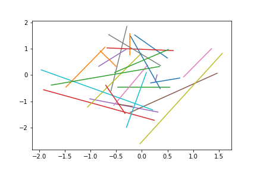
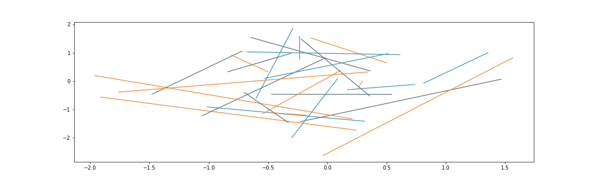

Building a maintainable plotting library

Slides are online!
build_a_plotting_library.colindcarroll.com
Code is also available here.
Many thanks to the Matplotlib team and contributors.
Set a stylish default
import matplotlib.pyplot as plt
plt.plot(*np.random.randn(50, 2))

Set a stylish default
plt.rcParams.update({
"axes.prop_cycle": plt.cycler(
"color",
["#EE9041", "#459DB9", "#667B83"]),
})
plt.plot(*np.random.randn(50, 2))

Set a stylish default
plt.rcParams.update({
"figure.figsize": [10.0, 3.0],
})
plt.plot(*np.random.randn(50, 2))

Set a stylish default
plt.rcParams.update({
"lines.marker": "d",
})
plt.plot(*np.random.randn(50, 2))

Set a stylish default
plt.rcParams.update({
"lines.linestyle": "",
})
plt.plot(*np.random.randn(50, 2))

Set a stylish default
plt.rcParams.update({
"lines.markersize": 48.0,
})
plt.plot(*np.random.randn(50, 2))

Set a stylish default
plt.rcParams.update({
"axes.spines.bottom": False,
"axes.spines.top": False,
"axes.spines.left": False,
"axes.spines.right": False,
"xtick.major.bottom": False,
"ytick.major.left": False,
})
plt.plot(*np.random.randn(50, 2))

Set a stylish default
plt.rcParams.update({
"lines.markeredgecolor": "black",
})
plt.plot(*np.random.randn(50, 2))

Set a stylish default
x = np.linspace(-2, 2)
plt.plot(x, np.cos(2 * x))
plt.plot(x, np.sin(2 * x))
plt.plot(x, -np.cos(2 * x))

Save your styles
from pathlib import Path
print(Path(matplotlib.get_configdir()) / "stylelib")
# Create file "my_style.mplstyle"
import matplotlib.pyplot as plt
plt.style.use("my_style") # all set!
Build custom plots with Artists


fig, ax = plt.subplots(figsize=(10, 7))
lc = LineCollection(
segments=[
((0, 1), (1, 1), (2, 1), (3, 1)),
((0, 1), (1, 2), (2, 3), (3, 4)),
((0, 0), (1, 2), (2, 4), (3, 9)),
],
)
ax.add_collection(lc)
ax.set_ylim(0, 9)
ax.set_xlim(0, 3)
...
lc = LineCollection(
segments=...,
colors=('red', 'green', 'blue'),
linewidths=(4, 8, 12),
linestyles=('dashed', 'dotted', 'solid')
)
...

...
lc = LineCollection(
segments=[
((0, 0), (1, 2)),
((1, 2), (2, 4)),
((2, 4), (3, 9))
], ...
)
...

Getting the LineCollection working
x = np.linspace(-2, 2)
y = x ** 2
points = np.vstack((x, y)).T
# array([[-2. , 4. ],
# [-1.91836735, 3.68013328],
# [-1.83673469, 3.37359434],
# [-1.75510204, 3.08038317],...
segments = list(zip(points[:-1], points[1:]))
fig, ax = plt.subplots()
lc = LineCollection(segments=segments)
ax.add_collection(lc)
ax.set_ylim(-0.2, 4)
ax.set_xlim(-2, 2)

linewidths = 30 * np.abs(np.sin(10 * x))
...
lc = LineCollection(
segments=segments,
linewidths=linewidths
)
...

cmap = plt.get_cmap('viridis')
...
lc = LineCollection(
segments=segments,
linewidths=linewidths,
colors=cmap(np.abs(np.sin(5 * x))),
)
...